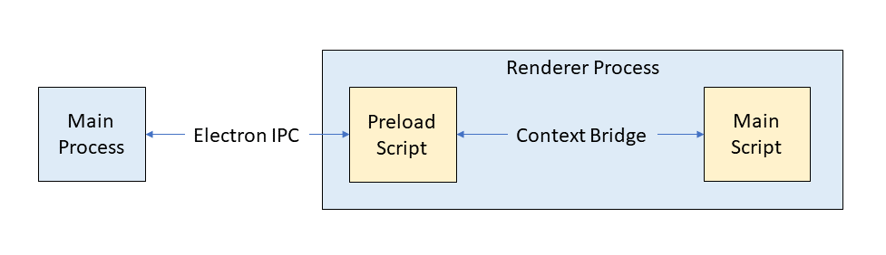
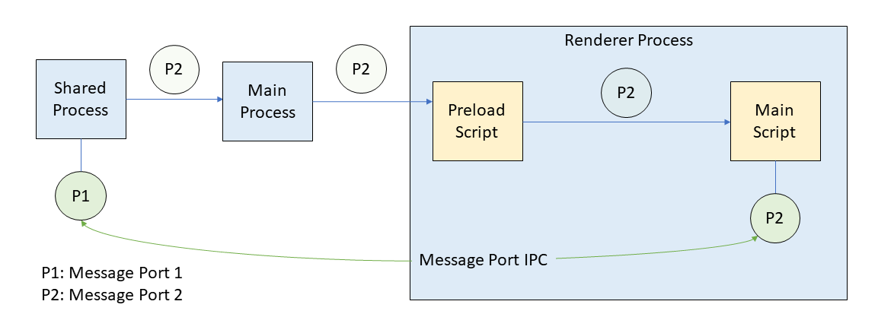
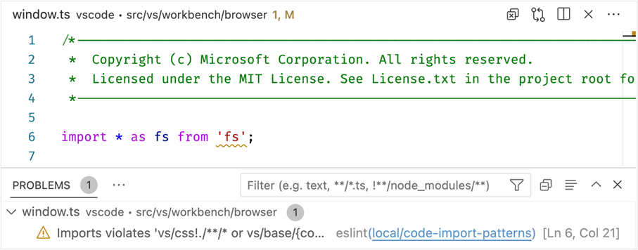

Migrating VS Code to Process Sandboxing
A win-win for security and the VS Code architecture
November 28, 2022 by Benjamin Pasero, @BenjaminPasero
Enabling the sandbox in Electron renderer processes is a critical requirement for secure and reliable Electron applications such as Visual Studio Code. The sandbox reduces the harm that malicious code can cause by limiting access to most system resources. In this blog post, we provide a detailed overview into how we managed to enable process sandboxing in VS Code, a journey that we started in early 2020 and plan to finish at the beginning of 2023. To help understand the challenge of process sandboxing, this blog post also describes details of the VS Code process model and how it evolved during this journey.
This was a team effort as fundamental architectural changes as well as code modifications were required in almost all VS Code components. The VS Code process architecture was overhauled and in the process significantly strengthened. We highlight the major milestones along the way, which we hope provides valuable insights for others to learn from. For the last few months, process sandbox mode has been running successfully in VS Code Insiders, giving us feedback about the impact of this change. Do not hesitate to reach out to us if you find an issue, have a suggestion for how to improve the experience, or have general questions.
If you are not familiar with VS Code or Electron or sandboxing, you may want to first review the Terminology section at the end of the blog post. There you will find explanations of the terms used and links to background material.
Process sandboxing in a nutshell
For a long time, Electron has allowed direct use of Node.js APIs in HTML and JavaScript. The code snippet below provides a simple example of a web page that not only prints "Hello World" to the user but also writes to a file on the local disk:
The Electron process that is responsible for presenting the web page to the user is called the renderer process. Enabling sandbox mode for the renderer process reduces its capabilities for improved security and to align more with the web model: while HTML and JavaScript are still allowed, usage of Node.js is not. Components in the renderer process that require access to system resources will have to delegate to another process that is not sandboxed.
The code below no longer depends on Node.js but uses a vscode global variable that provides the functionality to update settings. The implementation of the method involves sending a message to another process that has access to Node.js. As such, it is also no longer executing synchronously but asynchronously:
How we came to have the vscode global in the renderer process and how it is implemented is detailed in the Timeline sections below.
Blocking Node.js from renderer processes is an encouraged Electron security recommendation and will eventually be the only way of writing Electron applications. We have had security issues in the past where attackers were able to execute arbitrary Node.js code from the renderer process. A sandboxed renderer process greatly reduces the risk of these attacks.
How did we get there?
A change as large as removing all our Node.js dependencies from the renderer process comes at the risk of regressions and bugs. Code that was previously running in one process will have to be split and run across multiple processes. Node modules that are native and thus cannot be web-packaged have to move out as well. Certain global objects such as Node.js Buffer will have to be replaced by browser compatible variants such as Uint8Array.
The diagram below shows our process architecture before the sandbox effort started. As you can see, most processes are Node.js child processes (in green) forked from the renderer process. Most of the (inter-process communication) IPC is implemented via Node.js sockets and the renderer process is a major client of Node.js APIs – for example to read and write files.
We quickly decided that we wanted to work on process sandboxing without having to ship a separate VS Code application that is sandboxed. We wanted to incrementally make the VS Code renderer process sandbox-ready and then flip the switch at the end. Over the past years, we have shipped monthly stable releases of VS Code with changes that contribute to the sandbox goal without fully enabling it. Imagine flying an airplane that is being fundamentally rebuild while it is in the air. And in our case, users have mostly been unaware of the changes to VS Code.
Our technology timeline:
The next sections go into detail about how sandboxing came together over the past years. The main task was to remove all Node.js dependencies from the renderer process but along that way more challenges came up, such as figuring out an efficient sandbox-ready IPC solution with the help of MessagePort or finding new hosts for the various Node.js child processes that we could fork from the renderer process.
For the most part, the order of topics follows the actual timeline. To keep each section brief, we link to other documents and tutorials explaining a certain technical aspect in greater detail. And even though we planned for this work in early 2020, it is unfair to leave out some of the previous work that helped with this task. Let's take a closer look…
Standing on the shoulder of giants
When we started to consider sandboxing in early 2020, we had already shipped a version of VS Code that was able to run in web browsers. You can run vscode.dev in your browser and see Visual Studio Code for the Web in action. While creating a web version of VS Code, we had learned how to remove Node.js dependencies from the workbench – the main VS Code user interface window.
Removing dependencies to Node.js meant finding alternatives. For example, our dependency on the Node.js Buffer type was replaced with a VSBuffer equivalent that would fall back to Uint8Array in browser environments. We were also able to package some Node.js modules (oniguruma, iconv-lite) to run in web environments.
But even before VS Code for the Web became a reality, we had enabled support for remote development, which allows source code to be edited on a remote host, such as through an SSH connection (and later even powered GitHub Codespaces). For remote development, we had to implement a solution where the UI facing pieces of VS Code run locally, while the actual file operations run on a remote machine. This model applies to a sandboxed workbench as well, where privileged operations must run in a different process. In both cases, the renderer process communicates via IPC to a privileged host to perform the operations.
Enabling a communication channel from the renderer
When a renderer process cannot use Node.js, work must be delegated to another process where Node.js is available. One solution in the web context could be to rely on HTTP methods, where a server accepts the requests. However, this did not feel like the best solution for desktop applications, where running a local server on a port could be blocked by a firewall for security reasons.
Electron provides the ability to inject preload scripts into the renderer process that execute before the main script executes. These scripts have access to Electron's own IPC mechanism. Preload scripts can enrich the API available to the main script of the renderer through the context bridge API. While the preload script can use Electron's IPC directly, the main script cannot. As such, we expose certain methods via context bridge to the main script. In the example that we used in the beginning, here is how a method for updating settings could be exposed from a preload script into the main script:
Preload scripts are our fundamental building block for splitting privileged code from unprivileged. For example, writing to a file on disk means an IPC message with the new contents will travel from the main script to the preload script and from there into the main process that has access to Node.js.

Fast inter-process communication via message port
With the introduction of preload scripts, we have a way for the renderer process to communicate with the Electron main process to schedule work. However, in Electron applications it is critical to not overload the main process with too much work because it is also the process that is responsible for processing user input, for example from the keyboard and mouse. A busy main process can result in an unresponsive user interface.
This was a problem we had seen before. Even before working on sandboxing, we were interested in offloading performance intensive code to a background process, the VS Code shared process. This process is a hidden window that all workbench windows and the main process can communicate with. For example, when you install an extension, a request is sent to the shared process to perform the entire operation.
However, communication to the shared process was implemented over Node.js sockets. This had the advantage that there was zero overhead for the main process because it was not involved in the communication at all. The disadvantage is that Node.js socket communication is not possible in sandboxed renderers since you cannot use any Node.js APIs.
Message ports provide a powerful way of connecting two processes with each other by establishing an IPC channel between them. Even a fully sandboxed renderer process can use a message port because they are provided as a web API in browsers. Replacing the Node.js socket communication with message ports allowed us to have a sandbox-compatible IPC solution while still preserving the performance aspect of not having to involve the main process.
Passing message ports across process boundaries is complex, especially into sandboxed renderer processes with preload scripts. The sequence is outlined in the diagram below:
- The shared process creates the message ports P1 and P2 and keeps P1.
- P2 is sent via Electron IPC to the main process.
- The main process forwards P2 to the requesting renderer process.
- P2 ends up in the preload script of that renderer process.
- The preload script forwards P2 into the renderer main script.
- The main script receives P2 and can use it to send messages directly.

Changing the origin of the renderer
In a web browser, you type in a URL and content is loaded and presented. In Electron, you do not type a URL, instead the application decides for you which content to load and present. Thus, when you open VS Code, a window loads with a pre-configured URL to show the content of the workbench.
For VS Code, this URL had used the local file protocol pointing to an actual file on disk to load (file://<path to file on disk>). As part of the sandboxing work, we revisited this approach because it had severe security implications. Chromium makes certain security assumptions for the local file protocol that are less strict compared to the HTTPS protocol. For example, strict origin checks are not applied for local file protocol URLs.
With Electron, you can register custom protocols that can be used to load content into the renderer process. The custom protocols can be configured so that they behave the same as HTTPS protocols with respect to security. We used this approach to avoid having to run a local web server that serves the content.
With the introduction of the custom vscode-file protocol for all our renderer processes, we were able to drop all uses of the file protocol. It is configured to behave like HTTPS and meant we moved closer to how VS Code for the Web actually works.
Adapting our code loader
Historically all our TypeScript code is compiled to AMD modules and loaded with a custom loader that we have been maintaining over the years. We are planning to move away from AMD and embrace ESM, but that work is in its early stages.
Our code loader supports both Node.js and web environments by probing for some well-defined variables to figure out the actual running environment. A sandboxed renderer is essentially like a web environment, so very few changes were necessary for our loader to support the sandbox.
Once those changes were in, we were able to run an early version of VS Code with sandbox mode enabled. However, since we had not yet freed the renderer process from its Node.js dependencies, only a blank page was displayed along with errors output to the console.
Tooling to help with adoption
Now that we had a way to run VS Code with sandbox enabled, we wanted to invest in tooling to make the transition easier from source code that depends on Node.js to code that is "ready for sandbox". Given our investment in VS Code for the Web, we already had static analysis tooling in place that would block Node.js code from ever getting shipped to the web version. This tooling defined a set of Target Environments with their runtime requirements. Our tooling can detect and report the use of Node.js global objects (such as Buffer), Node.js APIs, or node modules in a target environment that does not allow them. For the work of sandboxing, we added a new target environment electron-sandbox that does not allow any use of Node.js. By moving code over into this environment, we were able to gradually get the code sandbox-ready.
In the screenshot below, a warning marker appears in the editor indicating that a file from the browser target environment depends on an API from Node.js. The warning will cause our build to fail and prevent accidentally pushing this code to a release.

Our Process Explorer and Issue Reporter utilities were among the first to conform to the electron-sandbox target requirements. We were able to run these windows fully sandboxed well before the workbench window finished adoption.
Moving processes out of the renderer
As the previous topics have explained in detail, moving pieces of Node.js functionality over to another process and using IPC to schedule work and receive the results can be straight forward.
However, some of the components in the workbench that depend on Node.js are more complex, specifically those that fork a child process, such as:
- Extension host
- Integrated terminals
- File watching
- Full-text search
- Task execution
- Debugging
Given that VS Code can run in remote scenarios, we already had mechanisms in place to perform some of the tasks remotely, namely: search, debugging, and task execution. These components can operate within the extension host process that naturally runs local to where the code is. As such, we were able to move ownership of these child processes from the renderer process to the extension host even when VS Code was running locally without a remote attached.
For the extension host, we had more ambitious plans. We cover those changes in its own section later because it required adding a new "utility process" API to Electron.
Integrated terminals and file watching moved to be child processes of the shared process. Any window that requires file watching or integrated terminals would talk to the shared process via message ports to acquire these services.
The diagram below shows our process architecture in late 2022, once we had enabled the sandbox in the renderer process. All Node.js processes have moved to be either a child of the shared process or a utility process from the main process. Message ports are used for efficient direct process-to-process communication without burdening the main process.
Adjusting Chromium's code caching
We also wanted to ensure that enabling sandbox would not cause any performance regressions. We measured the time it takes from startup to show a blinking cursor in the editor and a critical amount of time is spent in the V8 JavaScript engine to load, parse, and execute the main workbench script (about 11.5 MB of minified code). Unless an update is installed, the same script will be loaded for every startup. Given this behavior, V8 can store an optimized version of the script on disk that is faster to load the next time using code caching.
Chromium itself uses code caching to speed up load times of web pages. It triggers the same optimizations in the V8 engine as our solution, however the Chromium implementation only does so for web pages that are visited frequently over a specific duration. We wanted a solution that would always use code caching, given our application is a desktop application and not a web page.
We enabled code caching on startup, and it has quickly become our best solution for improved startup timings. Unfortunately, our solution depended on Node.js and was not applicable in sandboxed renderer processes.
By exposing code caching options in Electron, we can forcefully trigger code caching in Chromium when using the bypassHeatCheck option. In addition, we added an extra layer of protection by discarding previously generated code caches when we detect the user is running a newer version of VS Code.
A new Electron API: UtilityProcess
The final and probably most complex task was finding a solution for where to move the extension host. Like the shared process, communication was implemented via Node.js sockets. There is one extension host process per window and extensions are free to spawn as many child processes as they require.
We had thought about moving the extension host into our shared process like file watchers and integrated terminals but felt that we should take the opportunity and build something more flexible that does not require a hidden window as a host.
To that end, we wanted a robust and scalable solution that works in sandboxed renderers but preserves most of the current behavior:
- Isolated process with support for spawning child processes
- Full Node.js support
- Use message ports for direct IPC with sandboxed processes
At that time, Electron was not able to provide us with an API that supports these requirements and so we contributed a new utility process API to Electron. This API enabled us to move the extension host away from the renderer process and into a utility process that is created from the main process. Using message ports, we can communicate directly between the renderer and extension host without impacting any other process, such as the main process handling all user input.
Moving off the Electron webview element
While not necessarily required to enable sandbox, we took the opportunity to revisit the use of the Electron webview tag in VS Code and replace it with the iframe tag to more closely align with how VS Code works in the web. Both tags are similar in that they allow the workbench to host untrusted code from extensions while isolating the workbench from the effects of running this code. For example, when you open the preview of a Markdown file, the contents are rendered in such an element, provided by the built-in Markdown extension.
In most cases, we were able to just replace the webview tag with the iframe tag. However one feature was missing from iframes, the ability to perform and highlight textual searches in the content. This feature was critical to support searching through a Markdown document when previewing it. While Chromium internally implemented this functionality, it was not exported as a web API to use. We made the necessary changes to expose the API in Electron and were able to drop all usages of webview elements.
Enabling renderer process reuse
One performance benefit of sandboxed renderer processes is their lifecycle behavior in Electron. Traditionally the renderer process would terminate and restart every time a navigation occurs to another URL. For VS Code, this meant that changing a workspace or reloading the window would recreate the renderer process, which can be slow in some environments and setups.
Sandboxed renderer processes are kept alive, even when navigating URLs. Opening another workspace or reloading the current one is a lot snappier. However, for this to work requires making native Node.js modules that run in the renderer process context aware. Even though we ended up moving all native modules out of the renderer process to enable sandboxing, we still wanted to test renderer process reuse early on and thus made all our native modules context aware.
Putting it all together
The last step was to enable sandbox mode conditionally via a user setting. We did not want to enable sandbox mode for all our users but rather give it some time to be validated in our Insiders edition. With the window.experimental.useSandbox setting, sandbox is enabled by default in Insiders and can be enabled in Stable.
We plan to use our experimentation infrastructure to incrementally roll out the sandbox enablement to our Stable edition in early 2023. This will allow us to test and validate sandbox mode on an increasing set of users as we check for issues.
Once the experimental phase is over, sandbox mode will be enabled by default for all users and non-sandboxed mode will be removed. There is still some work planned for later iterations, for example, we want to convert the shared process to be a utility process as it is a hidden window and uses more resources than necessary.
This has been an amazing journey that was only possible with the help and motivation of the entire VS Code team. It was great to see that we could ship these changes incrementally, and be prepared for new Electron versions that require process sandboxing. We were able to greatly improve our process architecture and align more closely with the web model, creating a robust foundation for the future.
Terminology used
Electron is the main framework that enables VS Code for desktop to run on all our supported platforms (Windows, macOS, and Linux). It combines Chromium with browser APIs, the V8 JavaScript engine, and Node.js APIs, as well as platform integration APIs to build cross platform desktop applications.
In this blog post, we will refer to Electron process sandboxing simply as "sandbox".
It's important to understand the process model Chromium and thus Electron provides. In this blog post, we frequently refer to the following processes:
- main process - The application main entry point.
- renderer process - Windows that the user can interact with.
While there is always just one main process, renderer processes are created per window that is opened. You can learn more about the process model in the Electron Process Model documentation and this Chrome Developers blog post.
The "shared process" is not specific to Electron, but an implementation detail of VS Code. It is a hidden Electron window with Node.js enabled that all other windows can communicate with to perform complex tasks such as extension installation.
The "extension host" is a process that runs all the installed extensions isolated from the renderer process. There is one extension host per opened window.
The VS Code "workbench" window is the main window users interact with to edit files, search, or debug. In this blog post, we refer to it simply as "workbench". The other windows are Process Explorer and Issue Reporter that can be accessed from the Help menu.
We use the term "IPC" to refer to inter-process communication. IPC is a way for one process to communicate with another process.
We release a nightly version of VS Code called "Insiders" to test out the latest changes on a subset of users. Everyone in the VS Code team uses the Insiders edition and we hope that you will try it as well and report any issues.
Happy Coding!
Benjamin Pasero, @BenjaminPasero